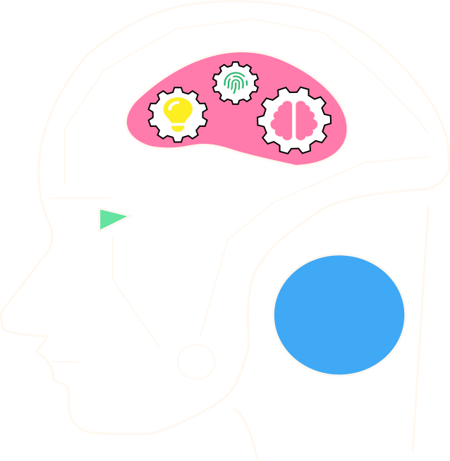
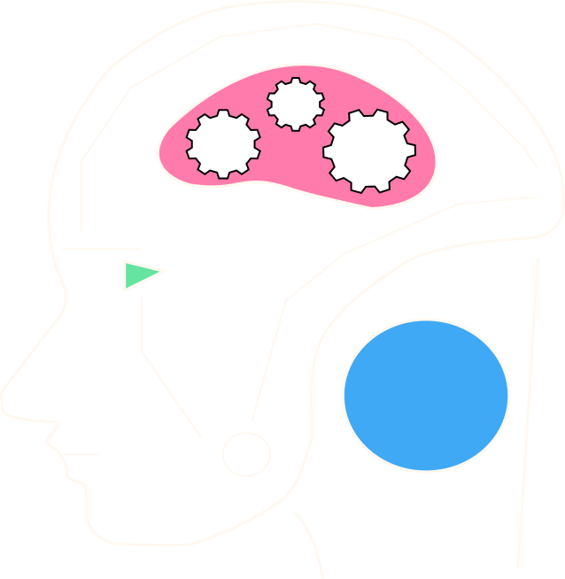

Der er flere som deler samme bekymring, men bare rolig. Vi tager dig på en rejse gennem et AI
univers, som giver dig klarhed på hvad fremtiden bringer.
Du kommer til at lærer mere om hvad AI kan og hvad det kommer til at kunne i fremtiden,
samt hvilken indflydelse det har på undervisningen i dag. Men hvad synes dagens undervisere og
elever egentlig om AI? bliv klogere på alt dette nedenfor.
Hvem bliver påvirket af AI?
Kim Elkjær Marcher-Jepsen - Programmerings Underviser på
Multimediedesign i Aarhus.
Magnus Bruun
Studerende på Multimediedesign 2. Semester i Aarhus.
Hvordan virker AI?
AI fungerer ved at bruge matematiske algoritmer og
maskinlæringsteknikker
til
at analysere store mængder data og lære af tidligere erfaringer.
Det kan indebære at identificere mønstre i data, træne modeller til at genkende objekter
eller
ansigter,
eller lære at udføre en bestemt opgave ved hjælp af træningseksempler.
Når en AI-model er trænet, kan den bruges til at analysere ny data og træffe beslutninger
eller
udføre opgaver på baggrund af den læring,
den har modtaget. AI-modeller kan også forbedres over tid ved at give dem adgang til flere
data
og feedback fra brugere,
så de kan blive mere nøjagtige og effektive over tid.
Supervised learning: AI-modeller kan lære fra mærkede data, hvor input- og outputdataene
er kendt. For eksempel kan en AI-model trænes til at genkende billeder af hunde og
katte, hvor hvert billede er mærket med den rigtige kategori.
Unsupervised learning: AI-modeller kan også lære fra umærkede data, hvor inputdataene
ikke er kategoriseret eller mærket på nogen måde. AI-modellen kan analysere dataene og
finde mønstre og sammenhænge på egen hånd.
Reinforcement learning: AI-modeller kan også lære gennem prøve-og-fejl-læring, hvor
modellen trænes til at tage beslutninger baseret på feedback fra sin omgivelse. For
eksempel kan en AI-model trænes til at spille et computerspil og modtage belønninger
eller straffe afhængigt af, hvor godt den klarer sig.
 
AI kan råde over data-sæt det enkelte menneske umuligt ville kunne
overskue.
AI anvender mønstre fra data-sæt til at efterligne en menneskelig
intelligens.
AI kan løse komplekse problemer på baggrund af dens massive data-sæt
og selvgenerede
intelligens.
Hvordan anvender man bedst AI i undervisningen?
AI kan komme til at vende op og ned på mange ting ved undervisningen.
Fremtidens undervisning,
bliver nok en hybrid, hvor trivielle opgaver og den brede vidensoverførsel, kan løses af
teknologi.
Det er vigtigt, at der kommer et øget fokus på Sokrates
læringsprincipper,
hvor det handler om at stimulere kritisk og kreativt tænkning.
En forkert brug af AI vil medføre en forkert læringsproces og
præsentation. Frygt og
bekymringer kan have en negativ indvirkning på evnen til problemløsning, skriver
forskerne i artiklen, som er publiceret i
Philosophical Transactions of the Royal Society B.
AI vil kunne medføre en mere personlig læringsproces, hvor
mulighederne for idybdegående
dialoger mellem underviser og elev vil være mulig
AI har oplevet en stor udvikling i de seneste år, og et godt
eksempel på dette
er ChatGPT,
som er en stor sproglig model udviklet af OpenAI. ChatGPT er baseret på den avancerede GPT-3
teknologi,
og den er i stand til at forstå naturligt sprog og generere svar på en intelligent måde.
ChatGPT
blev lanceret i midten af
2020 og fik hurtigt opmærksomhed i hele verdenen, da det blev brugt af millioner af brugere
til
at kommunikere med hinanden og få
svar på spørgsmål om en lang række emner. Dette viser, hvor hurtigt AI kan sprede sig og få
succes i en bred vifte af applikationer,
og det er en indikation på, hvor stor betydning AI vil have i fremtiden.
I en nær fremtid vil AI kunne gøre alle undervisningsplaner 100% skræddersyede til
den enkelte elevs niveau og ønskede læringsstil.
-Kristoffer Okkels, AI specialist
AI vil gøre undervisernes arbejde nemmere, da en række administrative opgaver kan
automatiseres.
Det vil frigøre tid, som lærerne i stedet kan bruge på dialog med elever.
-Kristoffer Okkels, AI specialist
AI vil være det endelige opgør mod udenadslære, og vi vil derfor omkalfatre
undervisningssystemet til kvaliteter som kritisk tænkning og evnen til at bringe viden i
spil.
-Kristoffer Okkels, AI specialist
Hvordan kommer AI til at påvirke fremtidens
undervisning?
Inspiration til brugen af AI i undervisningen findes i mange former, alt fra kurser til youtube videor. Hvordan og i hvilket omfang man vil integrere det i ens undervisning, er lige nu op til den enkelte underviser. Men én ting er sikkert, det er et emne som enhver underviser bliver nødt til at reflektere over og derfra vurdere hvorhvidt det er et værktøj man ønsker at anvende.
Som elev kan AI andvendes i alverdens former som værktæj til at lave ens skolearbejde. Den enkelte elev kan udforske de muligheder som kunstig intelligens fører med sig, men bør også huske på, at give plads til egen reflektering og kreativ tænkning.
Svaret er 40
Svaret er 40. Når man regner en matematisk
ligning,
følger man normalt regnereglerne, som siger at man først skal multiplicere
og
derefter addere. dette tilfælde skal man først gange 10 med 2, hvilket giver
20,
og
derefter lægge 20 til de oprindelige 20, hvilket giver 40.
Hvad er 20+10*2?
Hvordan løser jeg 20+10*2?
Mange undervisere udtrykker bekymringer til læringsprocessen, ved brug af
AI,
hvor
andre måske ser det mere som et værktøj til at kunne lære hurtigere. Problematikken ligger
ved
at få
svarene, men ikke forstå processen eller svaret. Hvordan ville du bruge KI til at hjælpe
dig?
På 5 dage ramte Chat GPT 1 million brugere. Dette tog en
hjemmeside som
Netflix 3,5 år at nå dertil. Dette er blot ét eksempel på at Kunstig
intelligens er et hurtigt voksende element i dagligdagen, som vi alle til hverdag stifter
bekendtskab med.
Tid det tog at ramme én million brugere
ChatGPT
5 Dage
Instagram
75 Dage
Spotify
5 måneder
Dropbox
7 måneder
Facebook
10 måneder
Foursqare
13 måneder
Twitter
2 år
Airbnb
2.5 År
Kickstarter
2.5 År
Netflix
3.5 År
Den reflekterende praktiker
Når vi benytter AI i undervisningen, risikerer vi at miste en
vigtig del af læringen, nemlig
processerne og den reflekterende tilgang til at tænke over, hvordan vi når frem til
slutresultatet, dette er en proces som er essentiel for mennesket. Den reflekterende praktiker
er et begreb som netop tager hånd om dette emne, da det indebærer at dokumentere sine
overvejelser og kommunikation på skrift, og nu hvor vi har AI, risikerer vi at miste netop
dette, da det ofte giver os direkte svar uden at inkludere processen. Det er vigtigt at bevare
den reflekterende tilgang og de processer, der er afgørende for at udvikle vores faglige
kompetencer og forståelse. AI i undervisningen kan ses som et tveægget sværd, da det gavner dem
som vil lære, at give dem et nyt værktøj som kan give inspiration, men også forklaringer på
uvant materiale - på den anden side kan der sættes spørgsmålstegn ved etikken, da det giver
mulighed for snyd og dovenskab.
Kan menneskets natur overgå trangen til at hoppe
over hvor gærdet
er lavest, så er AI helt
sikkert en åbenbaring for undervisningen.
Mange tak for at læse med! Jeg håber det har gjort dig klogere. Tak for i dag!